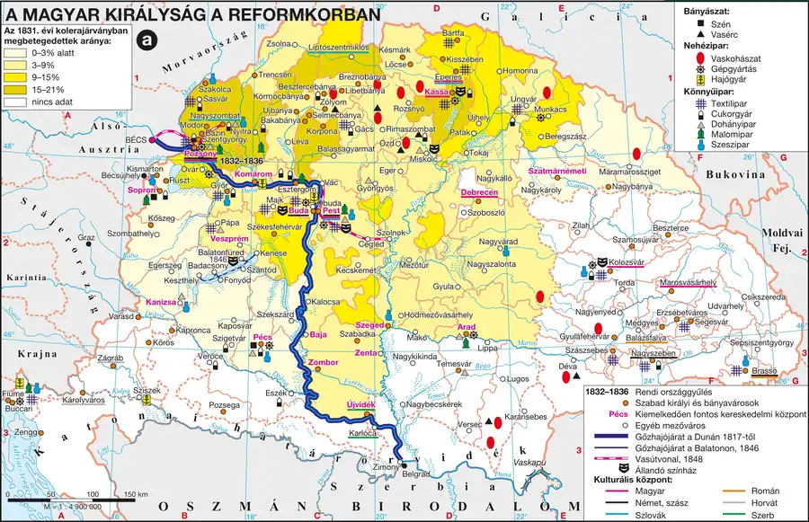

Az 1790–91-es kompromisszum és I. Ferenc konzervativizmusa
II. József halála után trónra lépő II. Lipót (1790–1792) rendezte az udvar és a rendek viszonyát: a dinasztia lemondott a rendeleti kormányzásról, a rendek pedig függetlenségi törekvéseikről — ezt rögzítette az 1790–91-es X. törvénycikk, amely megerősítette Magyarország alkotmányos önállóságát. Az őt követő I. Ferenc (1792–1835) uralkodása alatt azonban a francia forradalom és a napóleoni háborúk tapasztalata nyomán a bécsi udvar és államkancellárja, Klemens Metternich a fennálló berendezkedés változatlan megőrzésében látta a birodalom fennmaradásának zálogát — a napóleoni háborúkat lezáró bécsi kongresszus és a Szent Szövetség is ezt az elvet szolgálta nemzetközi szinten.
Gazdasági-társadalmi feszültségek és a lemaradás érzete
A napóleoni háborúk konjunktúrája idején megnőtt a nemesség jövedelme, ezt azonban nem fektették korszerűsítésbe; a háború utáni gazdasági visszaesés (devalvációk 1812, 1816) és a fejlődő nyugat-európai centrumországokhoz képesti egyre nyilvánvalóbb lemaradás vezetett a reformgondolat megerősödéséhez. A nemesség rendkívül tagolt volt: az udvarhű arisztokrácia, a megyei életet irányító birtokos köznemesség (a „táblabírák”) és a jobbágysággal szinte azonos életszínvonalon élő kisnemesség (kurialista, armális, honorácior, „bocskoros” nemes) körében egymástól eltérő volt a reformokhoz való viszony.
Fontos megkülönböztetés: az 1825-ben összehívott országgyűlés még nem tekinthető „reformországgyűlésnek” — a változást célzó törvényjavaslatok kidolgozása csak ezután, fokozatosan kezdődött meg. A reformkor kezdetét a szakirodalom egységesen az 1830-as évhez, Széchenyi Hitel című művének megjelenéséhez köti.
| Fogalmak | Személyek | Kronológia | Topográfia |
|---|---|---|---|
| — | József nádor; Klemens Metternich; I. Ferenc E | 1830–1848 a reformkor | Pest-Buda |
A Magyar Királyság a reformkorban
A reformkori gazdasági, közlekedési és kulturális térszerkezet fő elemei azonosíthatók.

1. forrás — I. Ferenc és Metternich megnyilatkozásai (tartalmi kivonat)
Metternich a monarchiát régi épülethez hasonlítja, amelynek falait nem lehet áttörni, új ajtókat-ablakokat nyitni, nagy belső változtatásokat végrehajtani veszély nélkül. I. Ferenc pedig egy alkalommal úgy nyilatkozott, hogy Metternichet is, őt magát is még kibírja az ország.
a) Milyen hasonlattal írja le Metternich a birodalmat?
b) Milyen politikai álláspontot fejez ki ez a hasonlat?
c) Milyen történelmi tapasztalat állhatott I. Ferenc és Metternich konzervativizmusa mögött?
Ellenőrző feladatok
Állítás: Az 1825-ös országgyűlés a szakirodalom szerint már „reformországgyűlésnek” számít.
Mely évtől számítjuk a reformkor kezdetét?
Egészítsd ki: Az udvar politikáját meghatározó államkancellár neve Klemens ______.